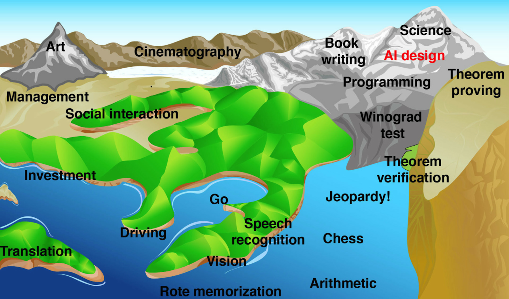

Conclusion
Malgré les avancées qu'a connu le domaine de l'IA, le développement d'une IA générale n'est pas d'actualité. Les méthodes utilisées par l'IA faible sont des méthodes qui essaient de reproduire quelques fonctions humaines mais cela reste limité. De plus, si on regarde le Deep learning par exemple les réseaux de neurones sont inspirés du fonctionnement des neuronnes du cerveau et comme on arrive pas à déterminer de manière claire le fonctionnement du cerveau humain, notre imagination pour créer des méthodes d'intelligence artificielle reste limitée. Une percée dans le monde de la neuroscience pourrait ouvrir une porte pour arriver à créer une IA générale.
Cependant, la réflexion sur comment accueillir et intéragir avec cette IA générale doit commencer dès maintenant. La coopération de tous les acteurs de ce domaine est alors nécessaire pour bien mener ce projet.
La création de la FLI par exemple (The Future of Life Institute) : un organisme de bienfaisance et de sensibilisation qui travaille à faire en sorte que les technologies les plus puissantes de demain soient bénéfiques pour l'humanité. Avec des technologies plus puissantes comme les armes nucléaires, la biologie synthétique et la future intelligence artificielle forte, mieux vaut planifier à l'avance que de tirer les leçons des erreurs ; il soutient donc la recherche et d'autres efforts visant à éviter les problèmes en premier lieu.

Les élévations dans la figure représentent une difficulté pour les ordinateurs et l'élévation du niveau de la mer représente ce que les ordinateurs sont capables de faire. Au fur et à mesure le niveau de mer monte et les ordinateurs sont capables de faire plus de choses. Mais la question est : Les ordinateurs seraient-ils capables un jour de tout faire ? Si c'est le cas, quand est-ce que cela arriverait ? Et à quel point ce serait bien pour l'humanité ? Personne n'a les réponses de ces questions pour le moment, tous les chercheurs sont impliqués pour permettre le développement de l'IA et tout le monde doit être engagé à définir l'objectif d'une telle intelligence artificielle.